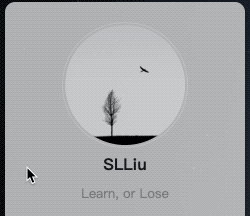
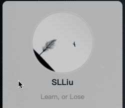
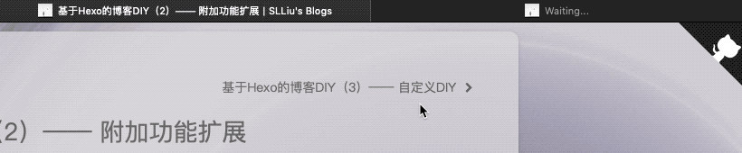

HexoDIY-自定义样式
网站使用 Hexo-NexT 主题：
0. NexT主题自定义
NexT 主题提供了使用数据文件来自定义默认样式的能力，可以避免侵入修改源码，相关设置在 NexT 主题配置文件内：
1
2
3
4
5
6
7
8
9
10
11
| custom_file_path:
head: source/_data/NextStyle/layout/head.njk
header: source/_data/NextStyle/layout/header.njk
sidebar: source/_data/NextStyle/layout/sidebar.njk
postMeta: source/_data/NextStyle/post/post-meta.njk
postBodyEnd: source/_data/NextStyle/post/post-body-end.njk
footer: source/_data/NextStyle/layout/footer.njk
bodyEnd: source/_data/NextStyle/layout/body-end.njk
variable: source/_data/NextStyle/variables.styl
style: source/_data/NextStyle/custom.styl
|
1. 侧栏头像动画
使用自定义头像，将图片放入 /source/images/ 下，然后在主题配置文件中修改：
1
2
3
4
5
6
7
8
9
| avatar:
url: /images/avatar.jpg
rounded: true
opacity: 1
rotated: true
|
1.1 自定义头像旋转效果
头像的样式是通过 CSS 控制的，所以可以通过注入 custom.style 来修改。
1.1.1 鼠标Hover时旋转
如果想让鼠标一过去头像就控记不住记几鬼畜疯狂旋转，则在 custom.style 中添加自定义 CSS 动画：
1
2
3
4
5
6
7
8
9
10
11
12
13
14
15
16
17
18
| if hexo-config('avatar.rotated') {
.site-author-image {
transition: transform 1.0s ease-out;
}
.site-author-image:hover {
animation: rotateAvatar 0.15s linear infinite;
}
@keyframes rotateAvatar{from{transform: rotate(0deg)}
to{transform: rotate(360deg)}
}
}
|

1.1.2 唱片式旋转
如果想让头像一直缓慢旋转，不受其他操作影响，同样在 custom.style 中添加自定义 CSS 动画：
1
2
3
4
5
6
7
8
9
10
11
12
13
14
15
16
17
18
19
20
21
22
23
| if hexo-config('avatar.rotated') {
.site-author-image {
transition: transform 1.0s ease-out;
animation: rotateAvatar 5s linear infinite;
}
.site-author-image:hover {
transform: none;
}
@keyframes rotateAvatar {
from {
transform: rotate(0deg);
}
to {
transform: rotate(360deg);
}
}
}
|

2. 浏览器标签页动态标题

由于只在打开某篇文章时才需要这个动画效果，因此可以在自定义数据文件 post-body-end.njk 中加载一个 JS：
1
2
3
4
5
6
7
8
9
10
11
12
13
14
15
16
17
18
19
20
21
22
23
24
25
26
27
28
29
30
31
32
33
34
35
| {# 可写进 js 文件中并放在【hexo/source/xxx/】目录下或【next/source/xxx/】目录下 #}
{# 然后通过：<script type="text/javascript" src="/xxx/*.js"></script> 方式调用 #}
{# 但目录不能以下划线开头（会视为隐藏文件夹而无法访问） #}
<script>
<!--动态浏览器标签-->
var OriginTitle = document.title;
var titleTime;
var titleTime2;
var titleTime3;
var blankTitle = "\u3000\u3000\u3000\u3000\u3000\u3000\u3000\u3000\u3000\u3000"
blankTitle = blankTitle + blankTitle + blankTitle;
document.addEventListener('visibilitychange', function () {
if (document.hidden) {
$('[rel="icon"]').attr('href', "/images/favicon-32x32-next.png");
document.title = OriginTitle;
clearTimeout(titleTime);
clearTimeout(titleTime2);
clearTimeout(titleTime3);
}
else {
document.title = "Welcome";
titleTime = setTimeout(function () {
document.title = "Back";
titleTime2 = setTimeout(function () {
document.title = "Welcome Back !";
titleTime3 = setTimeout(function () {
document.title = OriginTitle;
}, 500);
}, 300);
}, 300);
}
});
</script>
|
具体的文件名和路径请按照实际情况修改。其实这种三个定时器的嵌套比较 Low，不知道有没有办法可以重用定时器。
icon 处可以自定义一个小图像，可以是本地图像也可以是网络图片。不过需要注意的是，这里如果选择本地图片，“/”表示的就不是博客根目录而是主题根目录，所以 /images/ 其实等价于 /next/images/。同理，在主题配置文件中的 favicon 选项设置的也是浏览器标签页小图标，指定的路径也是以主题根目录为起始路径的。
3. 其他收录
文章加密：hexo-blog-encrypt（作者：MikeCoder）
点击爱心（会导致双击选中、三击选中整行失效）：Hexo NexT主题添加点击爱心效果（作者：asdfv1929）
页面加载进度条：Hexo博客NexT主题美化之顶部加载进度条（作者：潘高）
GitHub 角标：GitHub Corners
文章编辑器：HexoEditor